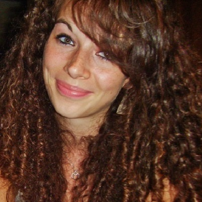

2020-2021 A distance
Languages HTML5 et CSS3. Découpage et intégration d'éléments graphiques conformément à une maquette. Application des règles standards HTML et CSS. Construction d'un site web en l'adaptant à tout type d'écran.
1ère année de Licence avec mention bien. Traitement d'images numériques avec Photoshop et Illustrator. Réalisation de projets artistiques.
1ère année et 2ème année de formation.
Stage réalisé en maternité, lors duquel j'ai fait le suivi des patientes et de leurs enfants pour effectuer leur soins post-partum ainsi que leur éducation à la santé. Tout en étant formée par les sages-femmes du service.
Stage réalisée en salle d'accouchement, au cours duquel j'ai accompagné les patientes lors de leur accouchement. Effectuer des monitorings pour vérifier le bon développement de l'enfant à venir. Réaliser un accouchement à 4 mains avec l'accompagnement d'un gynécologue. Tout en faisant les soins infirmiers techniques.